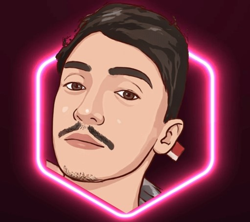

Inteligência Artificial
Universidade Tecnológica Federal do Paraná · UTFPR
Ampliação da base em aprendizado de máquina e aplicações de inteligência artificial.
Desenvolvedor full stack
Desenvolvo aplicações conectando tecnologia, negócios e inteligência artificial.

Engenharia de Computação.
Tecnologia com contexto de negócio.
Botucatu, São Paulo
Brasil
Da ideia à aplicação.
Com o problema em foco.
Interfaces, regras de negócio e IA.
Três formas de explorar o que a tecnologia pode resolver.
3 projetos exibidos.
Sobre mim
Sou engenheiro de computação e desenvolvedor full stack, com interesse em inteligência artificial aplicada.
Minha vivência com um negócio familiar aproxima a tecnologia da operação: entender o trabalho de quem usa, organizar informação e construir soluções que façam sentido além da tela.
Nos projetos, exploro interfaces com React e TypeScript, dados e autenticação com Supabase e processamento de linguagem natural com Python. Do site institucional à gestão de estoque, meu interesse está em conectar a experiência de quem usa às regras de cada negócio.
Conheça minha trajetória no LinkedInFormação em engenharia, desenvolvimento
e experiência próxima da operação.
Universidade Tecnológica Federal do Paraná · UTFPR
Ampliação da base em aprendizado de máquina e aplicações de inteligência artificial.
Faculdade Galileu
Base em computação e sistemas, com TCC dedicado à análise de sentimento com BERT.
Ada Tech
Formação complementar em desenvolvimento de interfaces e aplicações web.
Vivência em rotinas administrativas, marketing e operação. Esse contexto ajuda a definir os problemas que busco resolver com o site da marca e o Gelo Gestão.
Planejamento e levantamento de requisitos para um software de gestão de resíduos radioativos.
Senai
Primeiro contato profissional com processos técnicos e manutenção.
Vamos conversar
Para oportunidades profissionais,
projetos e boas trocas sobre tecnologia.